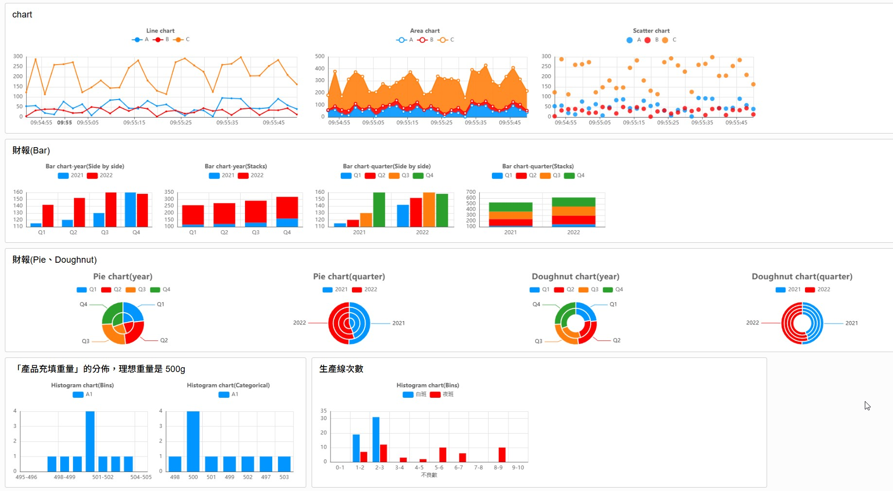
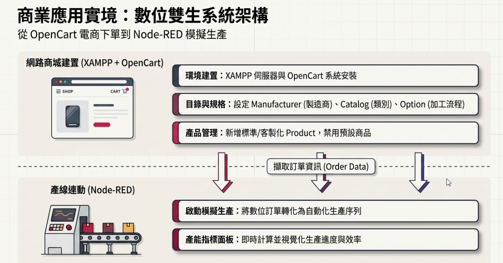
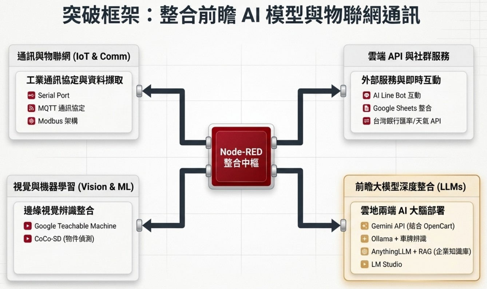
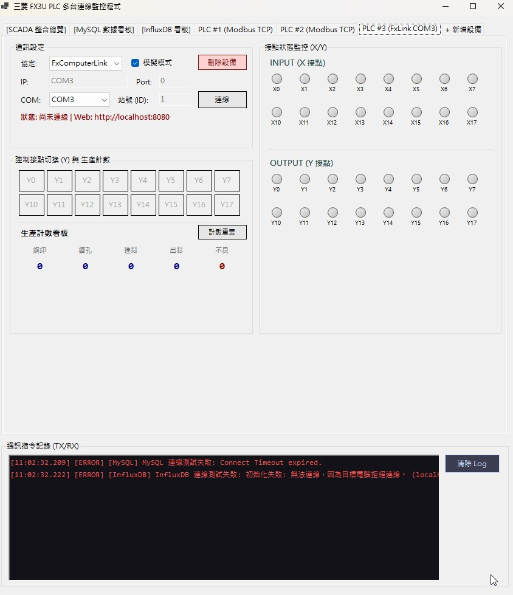
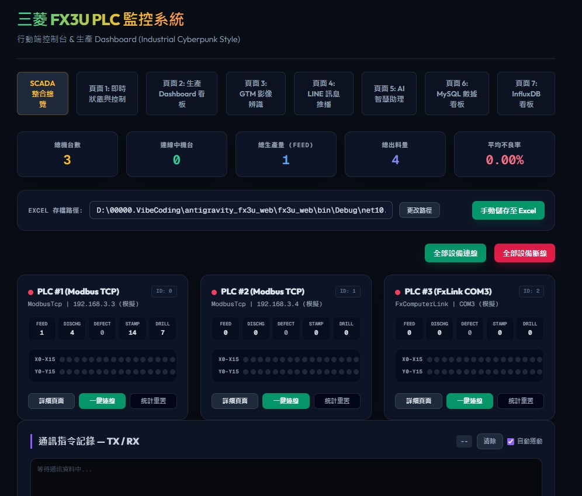

以下為大綱簡報 PDF 每一頁高解析度導出畫面。點擊上方分頁切換簡報，並點擊「下一頁」即可預覽內容。
打穩機電整合與 PLC 配線基礎，認識暫存器映射與串列通訊 (RS232/Serial Port) 協議，理解底層硬體運作邏輯。
運用 ChatGPT (Node-RED Expert)、Gemini (Canvas/AI Studio) 進行代碼編寫與故障排除，大幅加速從零到一的程式原型開發。
引入 Dev Copilot 與 Antigravity，將心力專注於系統架構與業務流程設計，體驗透過高階代理程式協作完成系統交付的全新工程範式。

Dashboard 儀表板
OpenCart 商城對接
IoT 工業物聯網
三菱 PLC 序列控制
行動端與多協議整合本例說明如何以 PC 端 Node-RED 做為 SCADA 監控主站，透過 RS232 串列通訊與現場的三菱 PLC 控制器進行資料雙向通訊與除錯。
SCADA 主站使用 Modbus/Serial 節點，每 500 毫秒輪詢 PLC 暫存器（如 D0 紀錄生產總數、D1 紀錄氣壓感測器數值）。
在 Dashboard 網頁上以圖形化顯示當前機器動態。若氣壓感測值過低，SCADA 的警報日誌 (Alarm Logger) 立刻跳出紅色閃爍警報，並通過 LINE Bot 推送故障訊息。
操作員在監控網頁上按下「啟動加工」按鈕，SCADA 發送 ASCII 指令強行寫入 PLC 的輔助繼電器（如 M0 = ON），驅動實體電磁閥與氣缸運作。
本例展示晶圓廠房設備聯網 (IoT) 架構下，如何以邊緣閘道器 (Edge Gateway) 收集現場數據並對接中央 SCADA 監控與歷史資料庫。
邊緣 Node-RED 透過 SECS/GEM 協議抓取晶圓傳送盒 (FOUP) 的機械狀態，利用 Function 節點將數據序列化為結構化 JSON 封包，並以 MQTT 協議發布。
中央廠務監控系統 (FMCS SCADA) 訂閱 MQTT 主題，將冷卻水流量、無塵室微粒子數及機台稼動率動態繪製在戰情大螢幕上。
SCADA 同步將海量高頻監測數據存入 InfluxDB 時序資料庫，並調用本地端 Ollama/Gemini API 定期運行預測性維護，判斷主泵浦的損壞風險。
本例說明在智慧家庭主機中，如何利用 Node-RED 對接聯網快遞箱，並透過第三方 API 與 Line Bot 實作包裹收發與門禁安全監控。
智慧快遞箱的磁簧門禁開關與重量壓力感測器，透過 Modbus TCP / MQTT 將即時訊號回傳給家庭 Node-RED SCADA 監控主機。
Node-RED 使用 HTTP Request 節點，定時呼叫郵局或黑貓的物流 API 進行狀態輪詢，比對成功後，將「包裹已投遞」事件寫入家用資料庫。
SCADA 在客廳的壁掛觸控螢幕上點亮快遞箱的指示燈（提醒有信），並透過 Line Bot 發送包含包裹重量與取件代碼的即時通知。